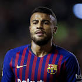

|  | Rafinha |
| Gender | Male |
| Ethnic | Brazilian |
| Job | Brazilian Footballer |
| Desc | xxxx |
Affiliation
| Org | xxxx National Team |
| Club as Player | Flamengo |
| Bayern Munich | |
| Celta Vigo [Loan] | |
| Barcelona |
- 2018 01 20
- Barcelona have granted Rafinha permission to complete a move away from the club, with Inter set to take him on an initial loan agreement
2018 01 22 Retrieve
[Barcelona have announced an agreement with Inter Milan over the loan of Rafinha for six months] I’m really happy, it’s a great feeling to be here. It’s an important stage in my life and I had a lot of desire to approach this new phase in my career. There have been a lot of important players at Inter who have made history. I want to do my best and give everything to finish as high as possible and win titles with this shirt. I hope to play in as many matches as possible and help the team to reach our objective which is Champions League qualification.
2018 03 26 Retrieve
[Rafinha stressed the Germans’ respect for Brazil] Everyone knows that Brazil look very different now, that we have restored the joy, are playing good football and are now a favourite. Players at Bayern and all over the world know that Brazil are back.
2018 04 19 Retrieve
[Rafinha remains confident that he will commit to a new contract at Bayern Munich and avoid the free agent pool] It looks good. We have to focus on the next games now first. After the semi-finals against Real Madrid we’ll see what comes.
2018 10 22 Retrieve
[Barcelona midfielder Rafinha is eager to tackle Inter in the Champions League] It wasn’t expected. Painful is not the word for Inter’s decision. I had a few months there in which things went very well, I regained confidence after a long injury. My team-mates and the fans made me feel very comfortable, like I was at home. It was a busy summer and because of the uncertainty of what was going to happen it wasn’t very clear. Things were changing, but I was at home, comfortable at being with the best team in the world
I felt like a footballer again and I was happy doing what I like the most. For me, it was an incredible experience. I was surprised I enjoyed it so much. My team-mates were excellent, the squad was fantastic. What stayed with me is the passion the fans have. It reminded me of how they experience football in Brazil
There were times last season when they were better away than at home. When I played, it was a team that changed a lot. So I think anything could happen
If they don’t count on me in January, then the best thing for me and them would be a way out. But I’m happy here. I want to play football. I don’t care how and where. If I’m physically well, I’ll be prepared for whatever comes
- 2018 12 04
- Barcelona confirm Rafinha out for six months after knee surgery
2019 01 09 Retrieve
[Bayern Munich defender Rafinha says he is close to reaching a deal to join Flamengo] There is mutual interest. We are about to reach an agreement. Some details are still missing. But I hope we can resolve this as soon as possible. I want to make it clear that Flamengo is my first option when I return to Brazil. I have seen the whole Flamengo project and I really liked it. I still want to win titles and I saw the opportunity with Flamengo.
My cycle at Bayern is coming to an end. There are many things that can happen in the next six months, but I think it’s my last year
2019 05 14 Retrieve
[Bayern Munich full-back Rafinha has confirmed that he will leave the Bundesliga giants at the end of the season] The eight years have been wonderful, I’ve had some great moments here. The treble in 2013 was special. All things come to an end eventually. We are together every day and know each other so well - we are a family. The friendship we all have is the greatest thing.
[The former Schalke defender has made just 26 appearances in all competitions] I do my work and train well, but the coach does not count on me. I do not know why. I have not made any problems. But of course I am disappointed
2019 05 14b Retrieve
[The 33-year-old Brazilian said his fond memories of a lengthy stay with the German giants will not be sullied if second-placed Borussia Dortmund pip them to top spot] We’ve been together for so long. That’s the most important. Not the last game or the last title. The friendship we have here is the most important thing. That’s why my mother said that I should say thank you for everything, to all employees and players. These people are very important to me
2019 06 10 Retrieve
[Rafinha has returned to his native Brazil with Flamengo after eight years at Bayern Munich] The eight years have been wonderful, I’ve had some great moments here. The treble in 2013 was special. All things come to an end eventually. We are together every day and know each other so well - we are a family. The friendship we all have is the greatest thing
- 2019 06 18
- Barcelona’s medical team have given midfielder Rafinha the all-clear after he completed his recovery from a knee injury that kept him out for almost seven months
- 2019 06 20
- Valencia are in negotiations with Barcelona over the signing of midfielder Rafinha.
2019 07 05 Retrieve
[Rafinha hopes Neymar returns to Barcelona to reestablish the pure magic of his combination with Lionel Messi and Luis Suarez] I hope Neymar comes back. He is a great player that would be really good for Barcelona. I have never seen anything like the Messi-Ney-Suarez trident, pure magic. And I hope Antoine Griezmann comes, too. I see myself in Barcelona next season and I will fight to continue. I want to play football and Barcelona is my home, I have a contract with the club and I have a lot of confidence.
2019 09 02 Retrieve
[Rafinha extends Barca contract & joins Celta Vigo on loan] FC Barcelona and Rafinha have agreed on the renewal of the player’s contract through to the end of the 2020/21 season. Additionally, Barça and Celta Vigo have come to an agreement whereas Rafinha will play at Celta on loan for the 2019/20 season. Celta thus take on Rafinha’s salary plus potential add-ons of up to €1.5m. FC Barcelona would like to publicly express its gratitude to Rafinha for his commitment and dedication, and wishes him the best of luck and continued success